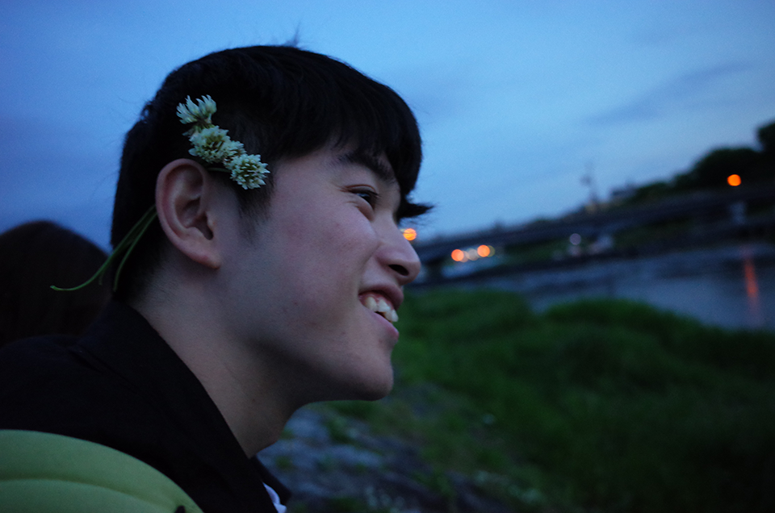
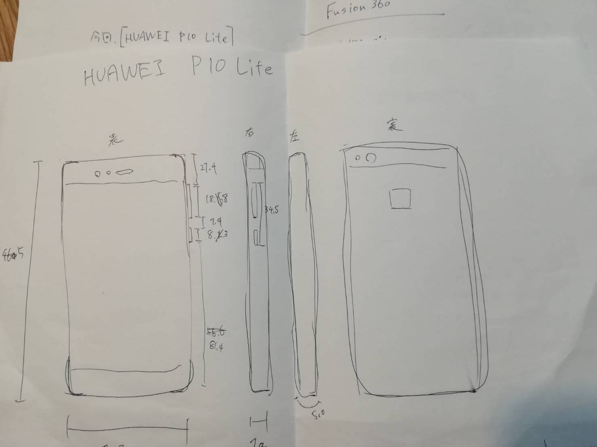
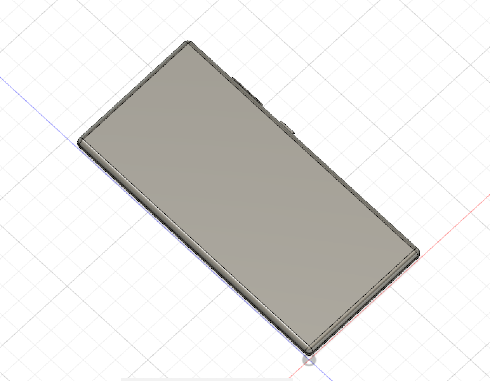

photoshop report
photoshopで何を作ろうか考えた時に、そもそもどんなものが作れるのか想像することができなかった.なので、youtubeを使い「photoshop tutorial」で調べて目に留まったものに挑戦することにした。
その動画がこれである。
はっきり言って、何が起こっているのかよくわからないまま進めたのもあって、
他の人にこの作り方を説明することはできない。
しかし、自分の中でphotoshopの可能性については知ることができた。
その点において、十分に価値があったように思う。
今後もphotoshopを使う機会は多々あるだろうから、日常的に使って慣れていきたい。
以下素材（2枚）と完成品
(1枚目、Pinterestより https://www.pinterest.jp)



登山家のトークイベントポスターのように見えたので気分で文字を追加してみた。
premiere pro report
今回のpremiereでの動画では、基本的な操作に慣れることに重きを置いて取り組むことにした。
高校まで、フリーソフトを使って個人的に動画編集を行なっていたのが裏目に出て、
思うように操作できなかった。しかし、編集の過程で若干掴めた感覚があったので、
今後もいじっていきながら慣れていきたい。
3Dcad＿report
Fusion360
3D化に挑戦したもの[HUAWEI P10 Lite]
1 長方形（立方体）
↓
フェレット


ソフトに慣れることができず、四苦八苦した結果ではあるが、スマホとはいうには少し荒すぎる気もする。
どうすればもっとスマホらしくなるのだろうか……。
ノギスで寸法を測る際も、測るたびに数値が変わり苦戦した。